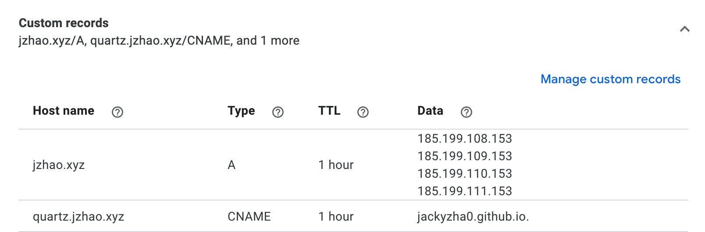

Quartz effectively turns your Markdown files and other resources into a bundle of HTML, JS, and CSS files (a website!).
However, if you’d like to publish your site to the world, you need a way to host it online. This guide will detail how to deploy with common hosting providers but any service that allows you to deploy static HTML should work as well.
Warning
The rest of this guide assumes that you’ve already created your own GitHub repository for Quartz. If you haven’t already, make sure you do so.
Hint
Some Quartz features (like RSS Feed and sitemap generation) require
baseUrlto be configured properly in your configuration to work properly. Make sure you set this before deploying!
Cloudflare Pages
- Log in to the Cloudflare dashboard and select your account.
- In Account Home, select Workers & Pages > Create application > Pages > Connect to Git.
- Select the new GitHub repository that you created and, in the Set up builds and deployments section, provide the following information:
| Configuration option | Value |
|---|---|
| Production branch | v4 |
| Framework preset | None |
| Build command | npx quartz build |
| Build output directory | public |
Press “Save and deploy” and Cloudflare should have a deployed version of your site in about a minute. Then, every time you sync your Quartz changes to GitHub, your site should be updated.
To add a custom domain, check out Cloudflare’s documentation.
Warning
Cloudflare Pages performs a shallow clone by default, so if you rely on
gitfor timestamps, it is recommended that you addgit fetch --unshallow &&to the beginning of the build command (e.g.,git fetch --unshallow && npx quartz build).
GitHub Pages
In your local Quartz, create a new file quartz/.github/workflows/deploy.yml.
name: Deploy Quartz site to GitHub Pages
on:
push:
branches:
- v4
permissions:
contents: read
pages: write
id-token: write
concurrency:
group: "pages"
cancel-in-progress: false
jobs:
build:
runs-on: ubuntu-22.04
steps:
- uses: actions/checkout@v3
with:
fetch-depth: 0 # Fetch all history for git info
- uses: actions/setup-node@v3
with:
node-version: 18.14
- name: Install Dependencies
run: npm ci
- name: Build Quartz
run: npx quartz build
- name: Upload artifact
uses: actions/upload-pages-artifact@v2
with:
path: public
deploy:
needs: build
environment:
name: github-pages
url: ${{ steps.deployment.outputs.page_url }}
runs-on: ubuntu-latest
steps:
- name: Deploy to GitHub Pages
id: deployment
uses: actions/deploy-pages@v2Then:
- Head to “Settings” tab of your forked repository and in the sidebar, click “Pages”. Under “Source”, select “GitHub Actions”.
- Commit these changes by doing
npx quartz sync. This should deploy your site to<github-username>.github.io/<repository-name>.
Hint
If you get an error about not being allowed to deploy to
github-pagesdue to environment protection rules, make sure you remove any existing GitHub pages environments.You can do this by going to your Settings page on your GitHub fork and going to the Environments tab and pressing the trash icon. The GitHub action will recreate the environment for you correctly the next time you sync your Quartz.
Info
Quartz generates files in the format of
file.htmlinstead offile/index.htmlwhich means the trailing slashes for non-folder paths are dropped. As GitHub pages does not do this redirect, this may cause existing links to your site that use trailing slashes to break. If not breaking existing links is important to you (e.g. you are migrating from Quartz 3), consider using Cloudflare Pages.
Custom Domain
Here’s how to add a custom domain to your GitHub pages deployment.
- Head to the “Settings” tab of your forked repository.
- In the “Code and automation” section of the sidebar, click “Pages”.
- Under “Custom Domain”, type your custom domain and click “Save”.
- This next step depends on whether you are using an apex domain (
example.com) or a subdomain (subdomain.example.com).- If you are using an apex domain, navigate to your DNS provider and create an
Arecord that points your apex domain to GitHub’s name servers which have the following IP addresses:185.199.108.153185.199.109.153185.199.110.153185.199.111.153
- If you are using a subdomain, navigate to your DNS provider and create a
CNAMErecord that points your subdomain to the default domain for your site. For example, if you want to use the subdomainquartz.example.comfor your user site, create aCNAMErecord that pointsquartz.example.comto<github-username>.github.io.
- If you are using an apex domain, navigate to your DNS provider and create an
The above shows a screenshot of Google Domains configured for both jzhao.xyz (an apex domain) and quartz.jzhao.xyz (a subdomain).
See the GitHub documentation for more detail about how to setup your own custom domain with GitHub Pages.
Why aren't my changes showing up?
There could be many different reasons why your changes aren’t showing up but the most likely reason is that you forgot to push your changes to GitHub.
Make sure you save your changes to Git and sync it to GitHub by doing
npx quartz sync. This will also make sure to pull any updates you may have made from other devices so you have them locally.
Vercel
Fix URLs
Before deploying to Vercel, a vercel.json file is required at the root of the project directory. It needs to contain the following configuration so that URLs don’t require the .html extension:
{
"cleanUrls": true
}Deploy to Vercel
- Log in to the Vercel Dashboard and click “Add New…” > Project
- Import the Git repository containing your Quartz project.
- Give the project a name (lowercase characters and hyphens only)
- Check that these configuration options are set:
| Configuration option | Value |
|---|---|
| Framework Preset | Other |
| Root Directory | ./ |
| Build and Output Settings > Build Command | npx quartz build |
- Press Deploy. Once it’s live, you’ll have 2
*.vercel.appURLs to view the page.
Custom Domain
Note
If there is something already hosted on the domain, these steps will not work without replacing the previous content. As a workaround, you could use Next.js rewrites or use the next section to create a subdomain.
- Update the
baseUrlinquartz.config.jsif necessary. - Go to the Domains - Dashboard page in Vercel.
- Connect the domain to Vercel
- Press “Add” to connect a custom domain to Vercel.
- Select your Quartz repository and press Continue.
- Enter the domain you want to connect it to.
- Follow the instructions to update your DNS records until you see “Valid Configuration”
Use a Subdomain
Using docs.example.com is an example of a subdomain. They’re a simple way of connecting multiple deployments to one domain.
- Update the
baseUrlinquartz.config.jsif necessary. - Ensure your domain has been added to the Domains - Dashboard page in Vercel.
- Go to the Vercel Dashboard and select your Quartz project.
- Go to the Settings tab and then click Domains in the sidebar
- Enter your subdomain into the field and press Add
Netlify
- Log in to the Netlify dashboard and click “Add new site”.
- Select your Git provider and repository containing your Quartz project.
- Under “Build command”, enter
npx quartz build. - Under “Publish directory”, enter
public. - Press Deploy. Once it’s live, you’ll have a
*.netlify.appURL to view the page. - To add a custom domain, check “Domain management” in the left sidebar, just like with Vercel.
GitLab Pages
In your local Quartz, create a new file .gitlab-ci.yaml.
stages:
- build
- deploy
variables:
NODE_VERSION: "18.14"
build:
stage: build
rules:
- if: '$CI_COMMIT_REF_NAME == "v4"'
before_script:
- apt-get update -q && apt-get install -y nodejs npm
- npm install -g n
- n $NODE_VERSION
- hash -r
- npm ci
script:
- npx quartz build
artifacts:
paths:
- public
cache:
paths:
- ~/.npm/
key: "${CI_COMMIT_REF_SLUG}-node-${CI_COMMIT_REF_NAME}"
tags:
- docker
pages:
stage: deploy
rules:
- if: '$CI_COMMIT_REF_NAME == "v4"'
script:
- echo "Deploying to GitLab Pages..."
artifacts:
paths:
- publicWhen .gitlab-ci.yaml is committed, GitLab will build and deploy the website as a GitLab Page. You can find the url under Deploy > Pages in the sidebar.
By default, the page is private and only visible when logged in to a GitLab account with access to the repository but can be opened in the settings under Deploy → Pages.
Self-Hosting
Copy the public directory to your web server and configure it to serve the files. You can use any web server to host your site. Since Quartz generates links that do not include the .html extension, you need to let your web server know how to deal with it.
Using Nginx
Here’s an example of how to do this with Nginx:
server {
listen 80;
server_name example.com;
root /path/to/quartz/public;
index index.html;
error_page 404 /404.html;
location / {
try_files $uri $uri.html $uri/ =404;
}
}Using Caddy
Here’s and example of how to do this with Caddy:
example.com {
root * /path/to/quartz/public
try_files {path} {path}.html {path}/ =404
file_server
encode gzip
handle_errors {
rewrite * /{err.status_code}.html
file_server
}
}